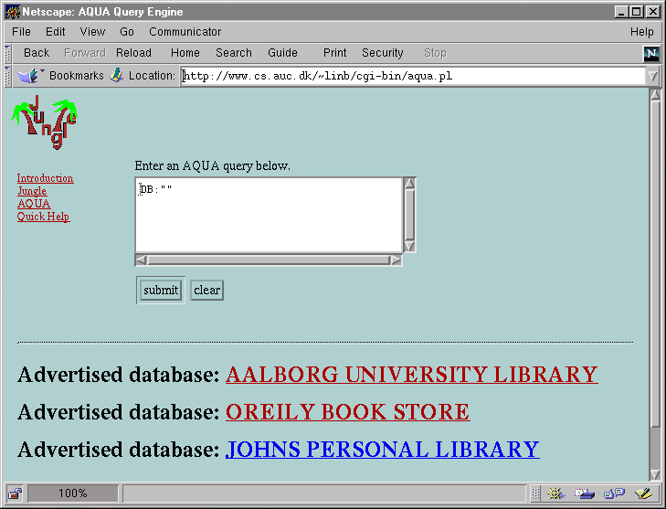
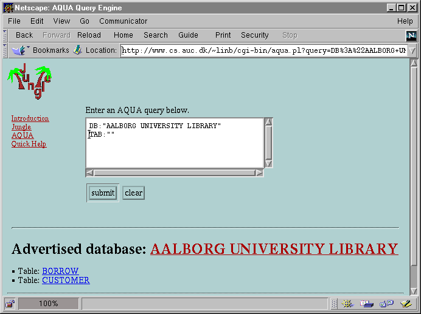
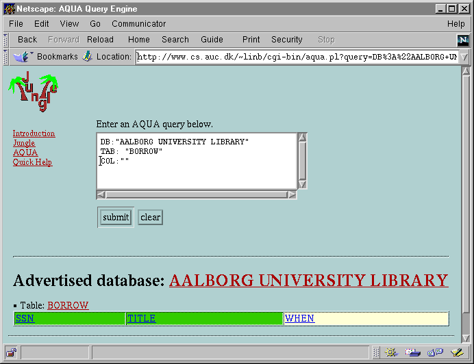
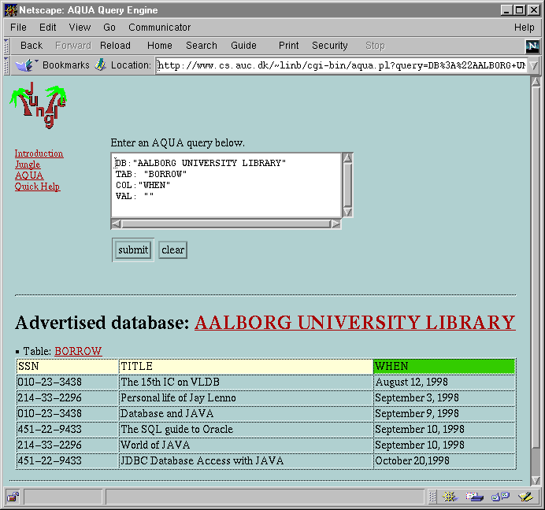
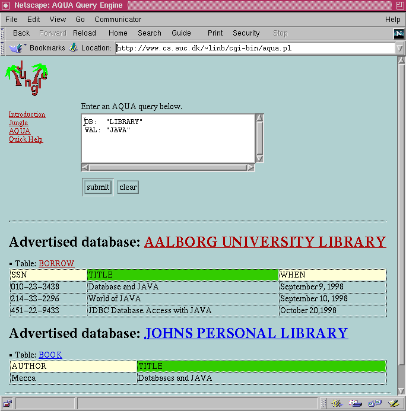
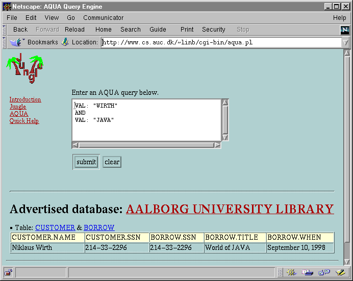
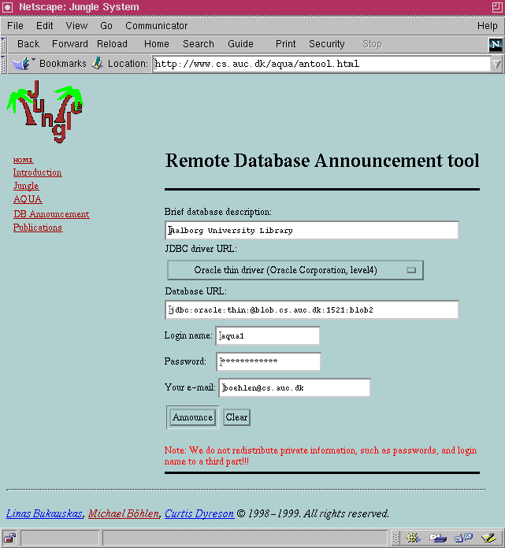

Michael Böhlen
Linas Bukauskas
Curtis Dyreson
Department of Computer Science
Aalborg University
Fredrik Bajers Vej 7E
9220 Aalborg
Denmark
Goals with Jungle
Goals with AQUA:
Credits:
AQUA - Database Level Search

What databases are searchable?
DB: ""
What library databases are known?
DB: "library"
AQUA - Table Level Search

Find all tables with information about books
TAB: "book"
AQUA - Column Level Search

Find columns about authors
COL: "author"
AQUA – Value Level

Find information about Java
VAL: "JAVA"
AQUA – Horizontal Queries

Find authors of publications that are available through libraries.
DB: "library"
TAB: "publication"
COL: "author"
AQUA –
Horizontal Queries

Does Wirth read Java books?
VAL: "Java" AND VAL: "Wirth"
Does Stonebraker use our VLDB proceedings?
DB: "library" VAL: "VLDB"
AND
VAL: "Stonebraker"
AQUA –
Database Announcement

Conclusion